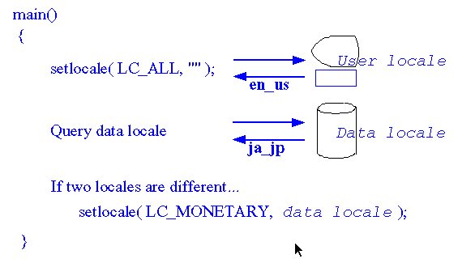

┌──────────────────────────────────────────────────────────────────────┐ │Use monetary symbol used in the original data, not that from the user │ │locale. │ └──────────────────────────────────────────────────────────────────────┘
Usually a monetary value is represented in the "monetary symbol + value" format. If only the monetary symbol is replaced and the value remains as is, the meaning alters. An application which handles monetary data must prepare the mechanism to determine the original monetary locale.
The following figure shows the simplest mechanism used in a sample program
in this primer. The program handles price data which is stored in the external
data file. The file has the locale name in which the file has been written.
The program checks the current locale and the data locale at the beginning.
If two locales are different (in this example, the difference is checked
by the language and territory), the program sets the data locale to the
LC_MONETARY category. In that case, the strfmon() function uses international
format, instead of the national currency format (refer to Country
Unique Formats for Output). To make it more strict, it would be better
to consider the case where the desired locale is not supported at runtime.
Determination of the monetary symbol
